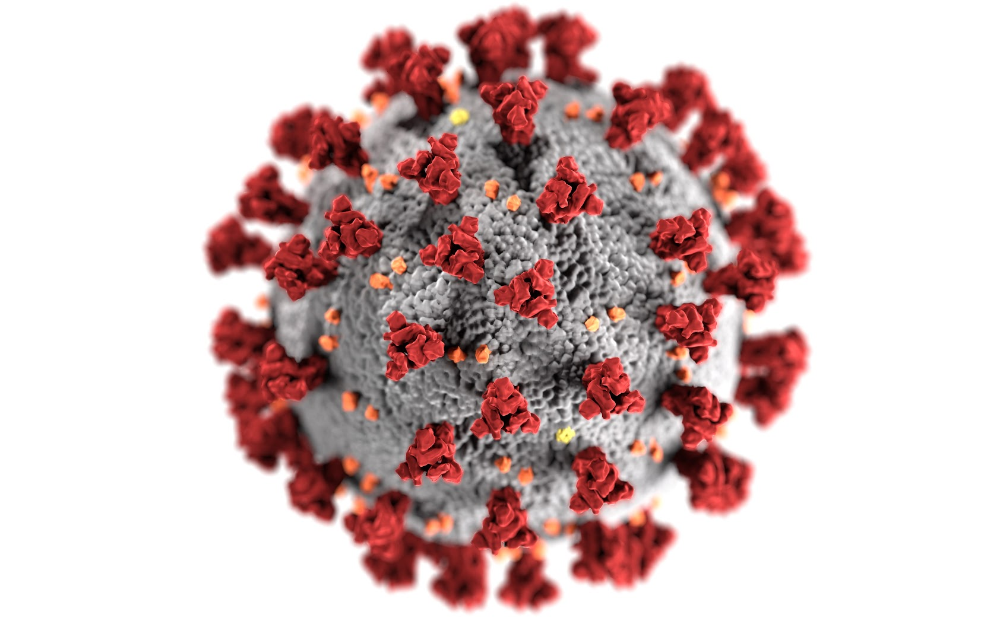
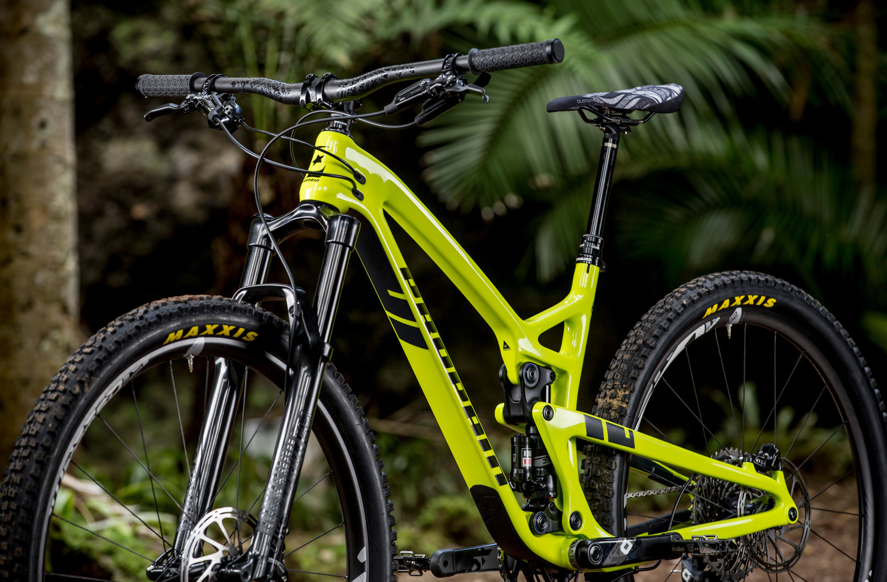
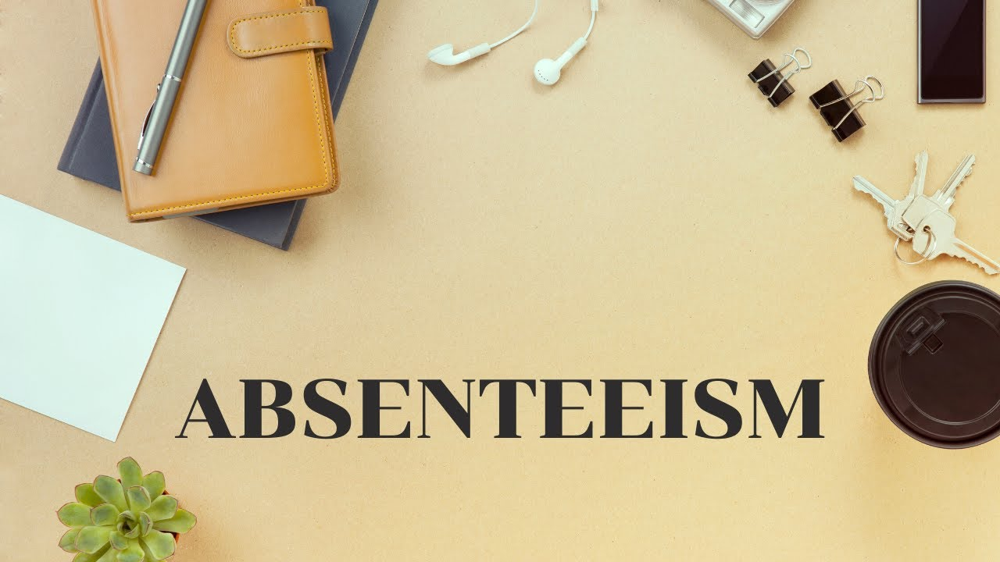

Through the project, we achieved a 7.5% ratio of expected losses to the total financed amount, it divided into 4 parts:
1. Data preparation: we cleaned the data and created columns from useful, close to each other data.
2. We made a PD model from useful data.
3. Monitoring: At this stage we compared the Actual and Probable results, at this stage we received the data of 2015 (load_data_2015)
4. LGD, EAD, and EL: In the last step, we made LGD, EAD models and put all the models into one DataFrame and found EL through them.

In this project we take raw housing data and transformit in SQL Server to make it more usable for analysis.

In this project we use SQL Server to explore global COVID 19 data.
This holds all of my Tableau Dashboards.
In this project we look at what variables effect the gross revenue from movies.

In this project, I determined the price of houses in Tashkent. For this purpose, first of all,
CRiSP-DM metadology was started, and work was organized according to metadology, and metadology was followed as much as possible.
During the project:Business Understanding, Data Understading, Data Preparation, Modelling,Evalution.

This classifier can recognize the following technologies from all images:
Phone, Watch, Weapon.

In this Project, we created a Bicycle Sales Dashboard using Excel.

In this project, we tried to find the main causes of absenteeism with the help of Machine Learning algorithms and give them a suitable solution.

How do data workers make money, which continent earns more money, are they satisfied with the money they are being paid, what programming language do they use, what is their level of data complexity,
what is their life-work balance, and similar questions. If you want to find an answer, I recommend you to refer to this dashboard.